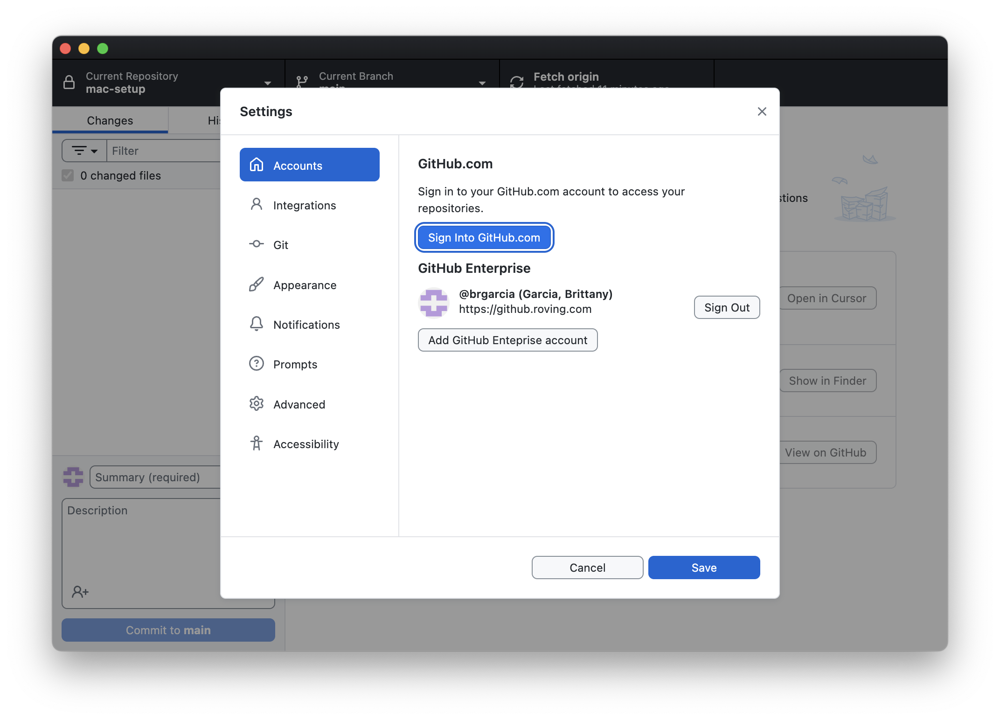

Prerequisites
Get access to everything you need before starting.
Connect to VPN
Make sure you're logged into the company VPN.
Get Admin Access
Search for "Make Me Admin" on your Mac, open it, click "Make me an admin", and enter your password. This gives you temporary permission to install software.
Verify you can access these links
Can't access? Ask in #design-x-cursor or email Ithelp@constantcontact.com
mac-setup
rise-ui
artifactory
Install GitHub Desktop
A visual app for downloading code — no command line needed!
Install the app, then open it and sign in with your GitHub Enterprise account (github.roving.com).
Clone Mac Setup & Let Cursor Guide You
Cursor AI will walk you through installing developer tools.
In GitHub Desktop:
1. Go to File → Clone Repository
2. Click the URL tab
3. Paste: https://github.roving.com/ES/mac-setup
4. Click Clone
Then open in Cursor:
Open Cursor → File → Open Folder → select the mac-setup folder
Ask Cursor:
"Review this mac-setup guide and help me get my Mac configured for Rise-UI development."
Cursor will read the docs and walk you through installing Xcode, Homebrew, Node.js, etc.
Clone Rise-UI & Run the App
The final step — get the app running locally!
In GitHub Desktop:
1. Go to File → Clone Repository
2. Click the URL tab
3. Paste: https://github.roving.com/rise/rise-ui
4. Click Clone (this may take a few minutes)
Then open in Cursor:
Open Cursor → File → Open Folder → select the rise-ui folder
Ask Cursor:
"Help me install dependencies and run this Rise-UI app locally."
You're done! 🎉
Once running, open http://localhost:4200 in your browser.
Progress Checklist
Connected to VPN
Got admin access (Make Me Admin)
Verified access to internal links
Installed GitHub Desktop & signed in
Completed Mac setup with Cursor
Rise-UI running locally 🎉
Need help? Ask in Slack:
#design-x-cursor